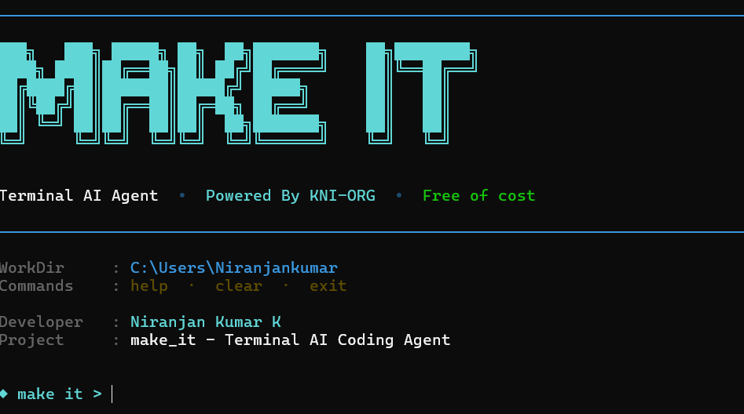
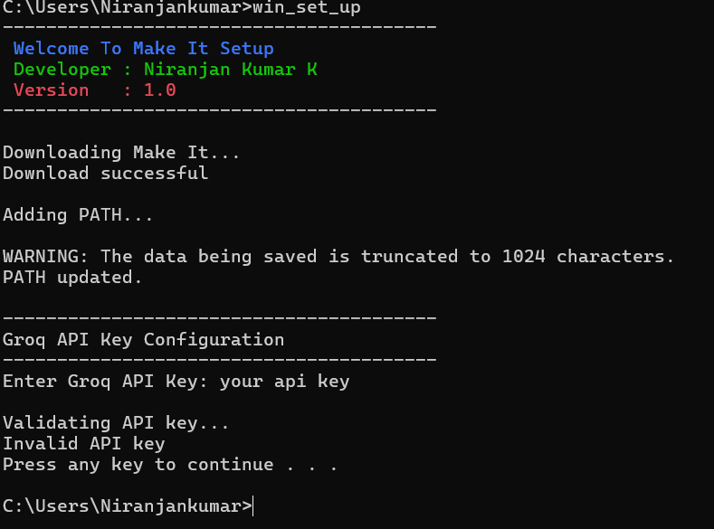
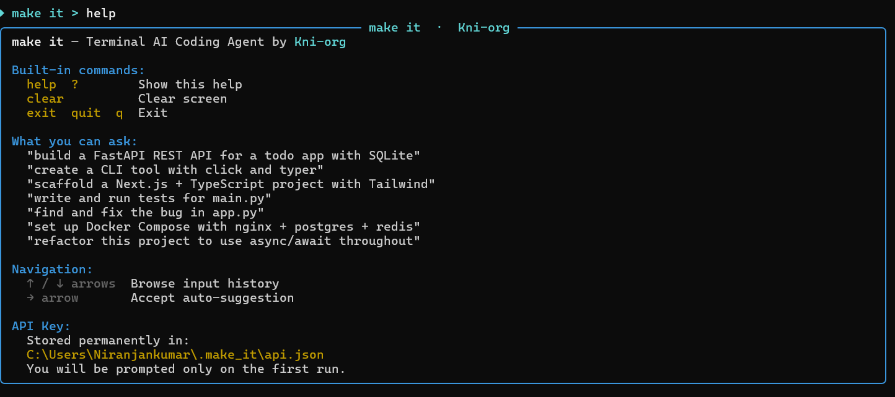

AI Coding
Write, refactor, and debug code with natural language instructions.
Terminal AI Coding Agent.
Tell Make It what to build — it creates projects, edits files, runs commands, and writes code right from your terminal. Powered by the lightning-fast Groq API.
Make It is engineered to get out of your way and ship your ideas.
Everything you need to build software with natural language.
Write, refactor, and debug code with natural language instructions.
Make targeted edits across multiple files with one instruction.
Generate full project scaffolds from a single prompt.
Let Make It run terminal commands safely with approval.
Remembers your project context across sessions.
A beautiful interactive terminal experience with syntax highlighting.
Windows, Linux, macOS, WSL, and Termux — everywhere you code.
Runs on the world's fastest inference engine.
Stream responses at blazing speed, no waiting.
Free, MIT-licensed, and community-driven.
A glimpse of the terminal experience across platforms.



Here's what the community is saying about Make It.
"Make It turned my terminal into a coding superpower. I generated an entire API service from a single prompt."
"The Groq-powered responses are instant. It feels like the AI is already thinking while I type."
"Setup took 30 seconds. One API key, and Make It remembered it forever. Exactly how developer tools should work."